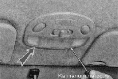
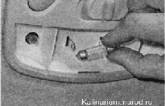
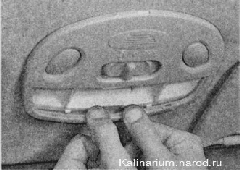
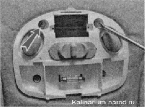
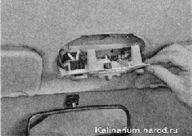
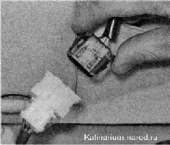
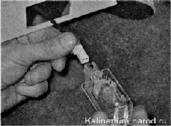
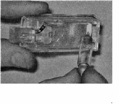
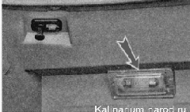

Плафоны освещения салона, багажного отделения и вещевго ящикаДля замены неисправной лампы достаточно снять рассеиватель плафона. Для замены выключателя лампы индивидуальной подсветки и для зачистки контактов выключателя лампы освещения салона необходимо снять плафон. Замена лампы 1. Подготавливаем автомобиль к выполнению работы. 2. Шлицевой отверткой с тонким лезвием освобождаем два фиксирующих выступа и снимаем рассеиватель. 
3. Для замены лампы освещения салона отжимаем пружинные контакты и извлекаем ее. Устанавливаем новую лампу в плафон. 
4. Для замены лампы индивидуального освещения нажимаем на нее и поворачиваем против часовой стрелки. Устанавливаем лампу в обратной последовательности. 5. Заводим два выступа на нижней части рассеивателя в пазы корпуса плафона освещения салона и нажимаем на верхнюю часть рассеивателя до защелкивания фиксаторов. Снятие 1. Снимаем рассеиватель плафона освещения салона. 2. Выводим нижнюю часть облицовки плафона из зацепления с корпусом. 3. Снимаем облицовку. 4. Крестовой отверткой отворачиваем два самореза крепления плафона к потолку салона.  5. Извлекаем плафон из отверстия обивки потолка.  6. Сжав с двух сторон пружинные фиксаторы, разъединяем колодки жгута проводов.  Установка Устанавливаем плафон в обратной последовательности. ЛАМПЫ ОСВЕЩЕНИЯ БАГАЖНОГО ОТДЕЛЕНИЯ И ВЕЩЕВОГО ЯЩИКА - ЗАМЕНАПоследовательность выполнения 1. Подготавливаем автомобиль к выполнению работы 2. Извлекаем плафон из отверстия левой облицовки полки багажного отделения. При необходимости отсоединяем колодку проводов от плафона. 
3. Отжимая пружинные контакты, вынимаем лампу из плафона  4. Заменяем неисправную лампу, собираем и устанавливаем фонарь освещения багажного отделения в обратной последовательности.- 5. Аналогично заменяем лампу освещения вещевого ящика.  |